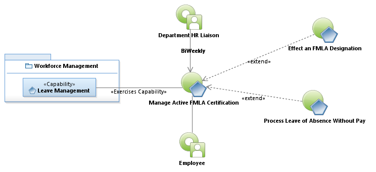
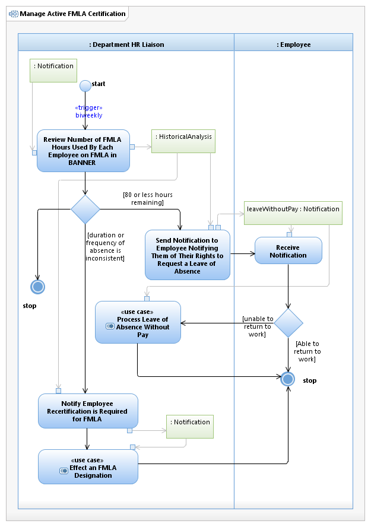

Use Case Model: Manage Active FMLA Certification
Architect: Aaron Brown, IT Enterprise Architect Senior
Date Last Modified: 03/15/2013
User Review: Shelly Sheppard, Linda Escamilla, Sharon Huckabee
Date: 03/15/2013
On a biweekly basis, the Department HR Liaison evaluates the FMLA status of employees and makes a determination as to which should go through recertification and which need to transition to Leave without Pay.
Follow link to Role Definitions

Use Case Model: Manage Active FMLA Certification

Activity Model: Manage Active FMLA Certification
Activity Documentation
| Activity | Documentation |
|---|---|
| Evaluate Eligibility Requirement | Examine Employees tenure, and their productive hours. They must be employed with City of Austin for one year, which does not have to be concurrent. And they must have 1250 productive hours in the preceding 12 months. |
Note: When the activity is self explanatory no documentation is provided.